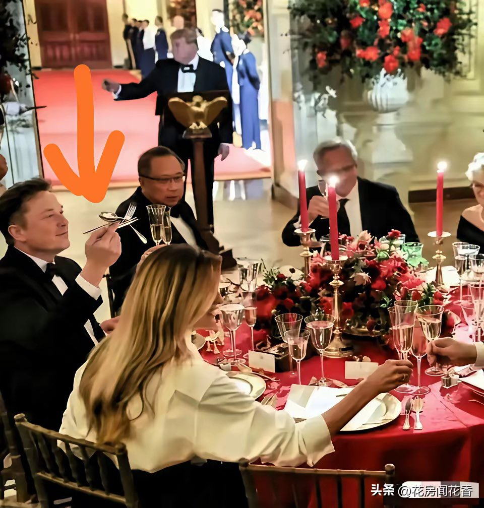
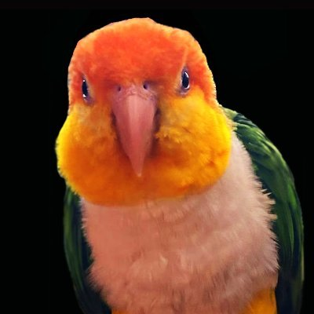

cjy
@fcjdfb
这别人就一动作瞎推很过了我觉得，我不是很希望他真是asd。主要不是因为他本人，其一已经又被炒成天才症了很反感这种消费群体的行为，其二这群b都已经去分析爱因斯坦是不是，这个那个是不是。谁给你们这种专业诊断行为的自信了，感觉是mbti鉴完了开始找另外一个污染了。还把热度炒的特别高开始人人自称


FatParrot
@fatparrotdaily
马斯克在白宫国宴上又玩勺子了
之前解读为天才型自闭症”
收集了一下医学方面网友猜测还有
Social Anxiety Disorder
社交焦虑障碍
手里没点东西，手不知道往哪放。
Generalized Anxiety Disorder
广泛性焦虑障碍
脑子在开会，手不能闲
Acute Stress Response
急性压力反应
纯粹紧张
Specific https://t.co/pUoJDkm0D5